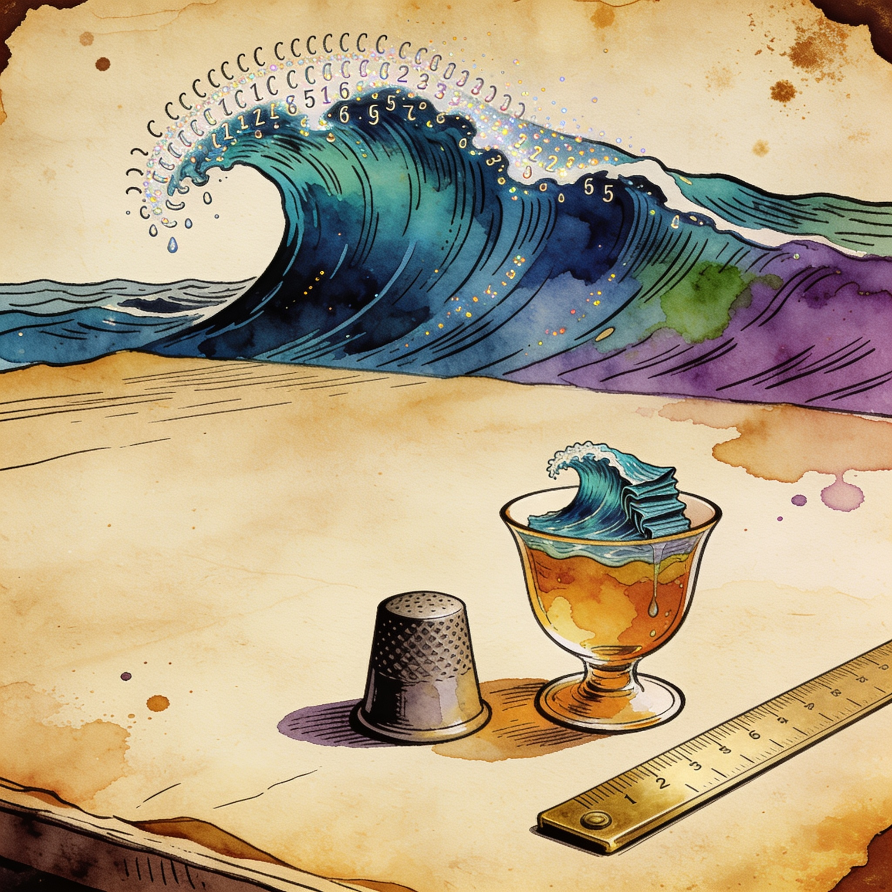

Inference Release
vLLM v0.32.0 lands with low-precision KV cache across NVIDIA and AMD silicon
The serving stack's biggest release in months ships 814 commits from 363 contributors. It adds broad low-precision KV cache support (NVFP4 on SM8x/SM12x/SM90, FP8 defaults for GLM-5.x, 4-bit ultraquant_4bit on ROCm), a new /v1/systemone endpoint for structured decisions with generic parsers, and makes Model Runner V2 the default on ROCm.